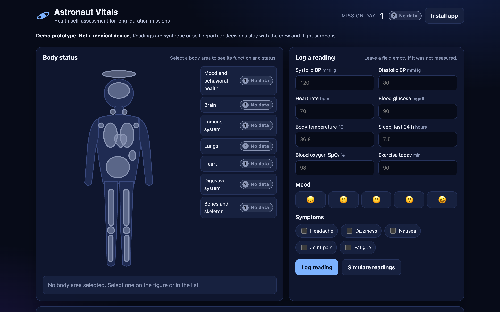
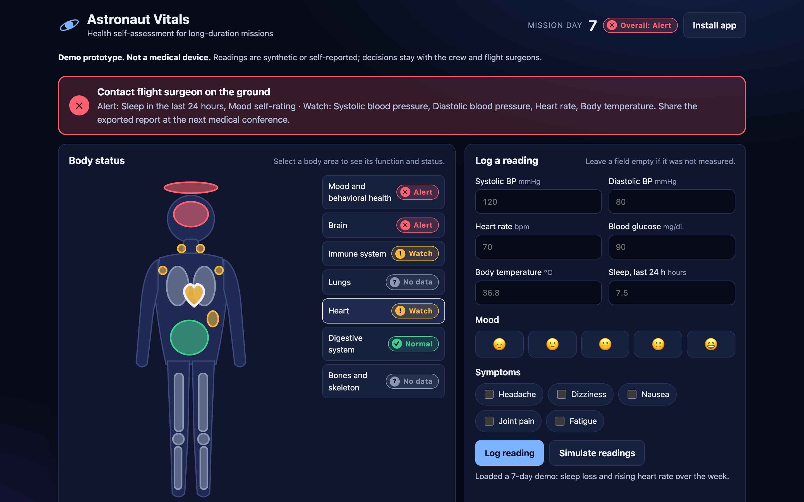
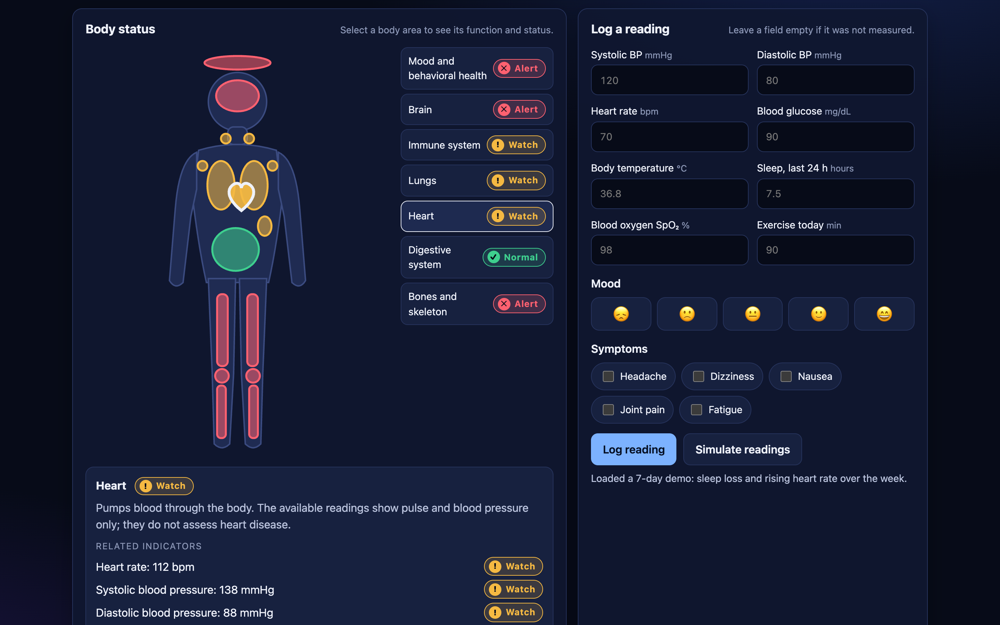
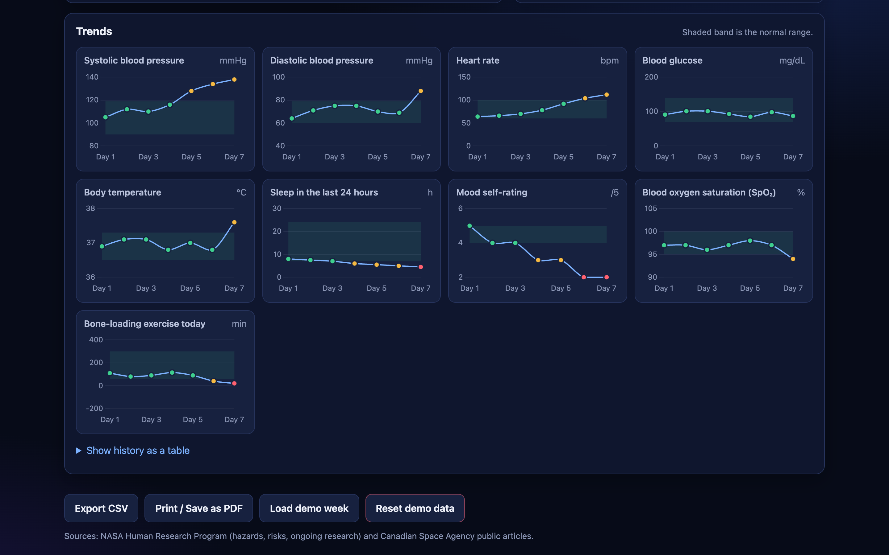

Health self-assessment for long-duration missions — works offline
Team Bit&Byte
Madi Shynzhyrbekov — logic & content
Miras Dunenbaev — user interface
NASA Space Apps Challenge 2026 · Universal Event
Challenge: Create Health Monitoring Software for Astronauts on Space Missions


A visual self-check that turns daily readings into NORMAL · WATCH · ALERT — always with icon and text.
Any ALERT or two WATCH → “Contact flight surgeon on the ground”.
9 readings: blood pressure, heart rate, glucose, temperature, sleep, SpO₂, exercise, mood + symptoms.

| Resource | How it shaped the app |
|---|---|
| NASA HRP — Five Hazards of Human Spaceflight | Hazard map; each body area linked to its hazards |
| NASA HRP — Risks of Human Spaceflight | Chose what we track: heart, bone, immune, sleep, behavioral health |
| NASA HRP — Ongoing Research · Fundamentals of Human Health | Medical context; flight-surgeon escalation |
| Canadian Space Agency — radiation monitoring · science in space | Radiation and health-monitoring context |
“Distance from Earth” drove the offline-first design. No real crew data — all readings are synthetic.
5 / 7
Day 1 NORMAL → Day 7 ALERT
Live app: mirasdunenbaev1305-web.github.io/NASA-Space-Apps-Astronaut-Health-Monitor
Demo video: …/demo/ · Code: GitHub
Demo prototype. Not a medical device. Synthetic data. Built with AI assistance (Claude) — see README “AI tools used”. Screenshots are real captures of our app.
7 / 7